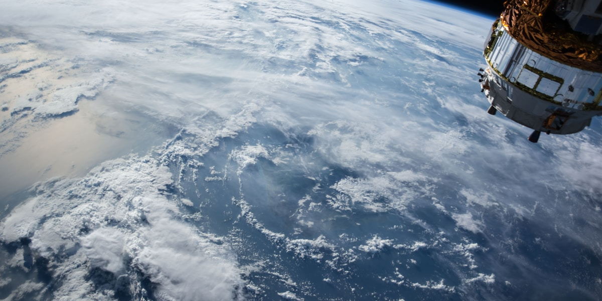

Universidades
Programas acadêmicos de engenharia aeroespacial e pesquisa orbital de ponta.

Mission Control Platform
Validação, simulação orbital e telemetria para missões CubeSat.
01 — Desafio
Universidades, startups e pequenas empresas não possuem ferramentas acessíveis para validar CubeSats antes do lançamento.
Falhas orbitais geram perdas milionárias e atrasam a democratização do acesso ao espaço.
02 — Stack
Stack integrada conecta simulação orbital, telemetria em tempo real e validação de hardware.
03 — Metas
04 — Mercado
Programas acadêmicos de engenharia aeroespacial e pesquisa orbital de ponta.
Institutos científicos que desenvolvem payloads experimentais para órbita baixa.
Empresas emergentes que precisam validar CubeSats com orçamento enxuto e ágil.
Faculdades técnicas formando a próxima geração de engenheiros espaciais.
05 — Valor
Identifique falhas críticas antes do lançamento com simulações precisas e confiáveis.
Reduza investimentos em protótipos físicos com validação digital completa.
Visualize trajetórias orbitais e consumo energético com dados em tempo real.
Teste cenários extremos de missão sem risco para equipamentos ou tripulação.
06 — Operações
Verifique integridade estrutural, energética e comunicacional do satélite antes do voo.
Modele trajetórias LEO, MEO e GEO com parâmetros reais de atmosfera e gravidade.
Monitore sensores, baterias e sistemas de comunicação em dashboards ao vivo.
Colabore com equipes globais compartilhando dados de missão em tempo real.
Galeria
Registro
Avaliação
Pergunta 1 de 10